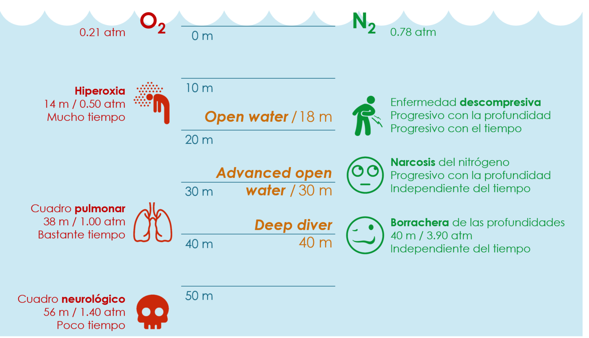

Respiración
El buceo con tubo, o buceo sin tubo de respiración (pero no sin equipo), es uno de los dos métodos básicos de buceo en los que el buceador se sumerge hasta una profundidad determinada (en el buceo con tubo, el buceador flota en el agua o se encuentra justo debajo de la superficie, no desciende a las profundidades). La duración de la inmersión de un apneísta depende del tiempo que pueda aguantar la respiración bajo el agua. Como parte de la preparación para su primera inmersión en apnea, es esencial realizar ejercicios de respiración y aprender los principios de la inmersión y la salida segura del agua.
Los apneístas no utilizan un aqualung que les permita permanecer/respirar bajo el agua, pero pueden hacerlo:
- Máscaras y gafas: protegen los ojos y hacen más cómodo admirar el mundo submarino
- Los trajes de neopreno o las pieles de natación protegen el cuerpo del buceador de un enfriamiento demasiado rápido
- Aletas – para aumentar la movilidad del buceador.
- Lastre – para una gestión eficaz de la profundidad de inmersión.
Descompresión
La descompresión para los buceadores consiste en las paradas que se deben realizar al momento del ascenso bajo el agua. Para ello, se siguen las indicaciones que te da el computador. Este, sabiendo la profundidad y el tiempo, te dará los cálculos correctos para tu ascenso.
Ahora debemos saber por qué sucede la enfermedad por descompresión. El aire que respiras es sometido a gran presión cuando haces una inmersión. Por eso, al momento de subir, el nitrógeno, que es con lo que se mezcla el oxígeno, forma burbujas en tu organismo.
Las burbujas de nitrógeno pueden pasar a la sangre (causando embolias), moverse de donde se han formado o quedarse allí. Estas burbujas se forman causando el síndrome de descompresión en el momento del ascenso. Pasa siempre y cuando la subida sea en un corto periodo de tiempo.

Fuente: Gil (2021).
Presión
La presión a la que está sometido un submarinista, surge de dos fuerzas:
- El peso del agua sobre el submarinista.
- El peso de la atmósfera sobre la superficie del agua.
Se pueden diferenciar los siguientes tipos de presión:
Atmosférica: Conjunto de fuerzas que actúan perpendicularmente sobre una superficie ejerciendo un esfuerzo repartido uniformemente sobre dicha superficie. Esto nos lleva a que, todo cuerpo con masa situado sobre la corteza terrestre (al nivel del mar) soporta un peso equivalente a una columna de aire que gravita sobre él y cuyo valor aproximado es de un kilo por centímetro cuadrado.
Hidrostática: actuación del agua sobre cualquier cuerpo, actúa en todas direcciones. Es el mismo caso que antes, pero en unas proporciones mucho más grandes ya que el agua es unas 800 veces más densa que el aire. La progresión lineal de este tipo de presión es de 1 atmósfera por cada 10 metros de profundidad alcanzada.
Absoluta: suma de las dos anteriores, actúa en un cuerpo en inmersión.
Composición del aire
Es una mezcla de gases, incolora, inodora e insípida que constituye la atmósfera que rodea a la Tierra. Se halla compuesta por:
78.13% de nitrógeno (N2)
20.90% de oxígeno (O2)
0.03% de dióxido de carbono (CO2)
0.94% otros gases (argón, vapor de agua, etc). ======== 100.00%
Composición de la luz
La luz sufre una serie de fenómenos cuando penetra en el agua de mar, tales como la Reflexión, que es el regreso a la atmósfera de una parte de los rayos lumínicos que llegan a la superficie. Aunque la mayor parte de los rayos penetran en el agua, se desvía por la refracción debido al cambio de viscosidad del medio. La pérdida de luz por reflexión depende del ángulo de incidencia de los rayos; cuanto más alto esté el sol, entrará más luz al mar debido a que el ángulo de incidencia es más pequeño.
La absorción es un fenómeno que expone que el agua absorve una cantidad de luz que es proporcional a la masa líquida recorrida por el rayo lumínico; este se debe a propiedades del agua misma y a las partículas en suspensión.
La difusión, que es la dispersión de luz en todas direcciones, y la refracción, que es el cambio de dirección que sufre un rayo lumínico al pasar de un medio a otro, si los medios tienen distinto índice de refracción, este fenómeno es el que causa que veamos los objetos sumergidos más cerca de lo que realmente están, y los hace parecer de mayor tamaño.
Un objeto sumergido es visto a 3/4 de la distancia verdadera e incrementado en 1/3 de su tamaño real. La luz que penetra en el agua de mar es refractada con un ángulo de 48.5 grados con respecto a la vertical. Un rayo de luz que provenga de debajo de la superficie a cualquier ángulo mayor a 48.5 grados no será difundido en el aire, pero se reflejará totalmente en el agua, y este fenómeno es el causante de que el buzo vea frecuentemente la superficie como la luna plateada de un espejo.